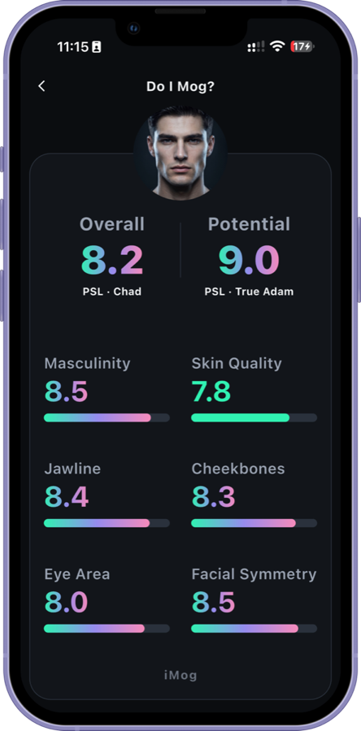
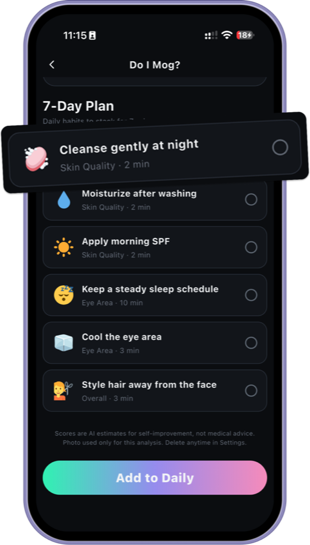

How to Looksmax: The Ultimate Beginner's Guide

You’ve decided to take your appearance seriously. Good. That decision alone puts you ahead of people who never try.
The problem is the rabbit hole. Mewing, hunter eyes, canthal tilt, bone structure, hardmaxxing. It’s easy to research for months and change nothing that actually shows up in real life.
This guide is a practical roadmap for how to looksmax as a beginner. Focus on what moves the needle, in the right order. Follow it for a few months and you should look clearly better than when you started.
The #1 beginner mistake
Beginners obsess over advanced techniques while ignoring fundamentals.
Guys will spend hours on mewing debates and skull analysis while they’re soft, sleep poorly, have rough skin, and wear clothes that don’t fit. That order is backwards.
Someone with average genetics who nails the basics (body composition, skin, hair, grooming, style) will usually look better than someone with stronger genetics who neglects them.
What actually matters first
Use this hierarchy:
- Body fat: excess face fat hides structure more than almost anything else
- Fitness and muscle: changes posture, presence, and how clothes fit
- Skin quality: clear skin is noticed immediately
- Hair: a bad cut undermines a good face
- Style and fit: fit beats brand names
- Grooming details: brows, facial hair, teeth, nails
- Sleep and lifestyle: affects everything above
- Advanced stuff: mewing, niche eye aesthetics, surgery talk
Master 1 to 7 before living in level 8. Most people never finish 1 to 4 and then wonder why nothing changes.
Step 1: Get an honest baseline
You cannot fix what you refuse to see.
- Take front, side, and 45° photos in plain light. No filters.
- Weigh yourself and estimate body fat honestly. Most people undershoot by a few percent.
- Note obvious face issues: acne, puffiness, dark circles, ungroomed brows, messy facial hair.
- Check hair: last real haircut, thinning, recession.
- Look at your wardrobe and ask what actually fits.
For the face specifically, a clean scan helps more than random Discord ratings. In iMog you get an Attractiveness Score, trait breakdown, and a PSL-style band you can compare later.

Step 2: Fix sleep first
Sleep is one of the highest leverage glow-up habits. Bad sleep shows up as dark circles, a puffy face, dull skin, worse gym recovery, and lower willpower.
- Set a consistent sleep and wake time, including weekends when possible
- Aim for 7 to 9 hours
- Cut caffeine after early afternoon
- Keep the room dark and cool
- If sleep quality is weak, magnesium glycinate before bed helps a lot of people
Many faces look better in two weeks just from sleeping properly. Start here even if the rest of your plan is messy.
Step 3: Train and get leaner
Resistance training is non-negotiable if you want a real glow up. It improves body composition, posture, presence, and clothing fit.
- Train 3 to 4 times per week on a simple beginner program
- Focus on compounds: squat, hinge, press, row, pull-up variations
- Track lifts and add weight or reps over time
- Creatine monohydrate at 5g daily is the most proven basic supplement
Diet doesn’t need to be fancy:
- Prioritize protein (roughly 0.7 to 1g per pound of bodyweight)
- Cut the obvious junk: sugary drinks, constant fast food, heavy alcohol
- Drink enough water
- If you’re soft, eat in a mild deficit. If you’re skinny, eat in a mild surplus. If you’re average, maintain and recomp.
Getting leaner is often the fastest way to improve your face. Facial fat hides jawline and cheek structure.

Step 4: Keep skincare stupidly simple
You do not need ten products in week one.
Morning
- Gentle cleanser
- Moisturizer
- Sunscreen SPF 30+
Night
- Gentle cleanser
- Moisturizer
Do that every day for a month before adding anything else. After the habit sticks, a retinoid a few nights per week is usually the next best upgrade for texture and clarity. Go slow. Expect some dryness early.

Step 5: Haircut and grooming
Hair frames your face. A good cut from a real barber or stylist can look like a different person overnight.
- Bring reference photos that match your hair type and face shape
- Pay for quality once, then maintain every 3 to 4 weeks
- Clean up brows without over-plucking
- Facial hair should look intentional: grown properly or clean shaven
- Trim nose and ear hair. Keep nails short and clean.
- Brush twice daily, floss, and fix obvious staining if you can
Neglected details signal that you don’t care. The opposite signal is what you want.
Step 6: Style is mostly fit
Well-fitting cheap clothes beat expensive clothes that hang wrong.
- Audit your wardrobe and remove pieces that don’t fit
- Build basics: good tees, one or two shirts, chinos, dark jeans
- Stick to neutrals first: black, white, gray, navy
- Get key items tailored if needed
- Keep shoes clean. People notice shoes more than you think.
A simple glow-up checklist
Body
- Training 3 to 4x per week
- Protein on track
- Moving toward a healthier body-fat range
Face and skin
- Cleanser, moisturizer, sunscreen daily
- Water intake solid
- Specific issues (acne, dark circles) being addressed
Hair and grooming
- Proper haircut on a recurring schedule
- Brows and facial hair cleaned up
- Teeth and nails handled
Lifestyle
- 7 to 9 hours of sleep
- Alcohol reduced
- Posture checked during the day
How to track progress without spiraling
Take new photos every 2 to 4 weeks in the same conditions as your first set. Compare side by side.
If you use iMog, rescan under the same lighting and angle. Look at the trend and your top weak points, not tiny day-to-day score swings.

What to ignore for now
- Surgery talk before softmaxxing is solid
- Chasing every TikTok eye aesthetic at once
- Running five different rating apps with different scales
- Judging your whole life off one bad bathroom selfie
Advanced options exist later. Most beginners never need them if the fundamentals are done well.
Realistic timeline
- Week 1 to 2: sleep, haircut, and grooming can show fast
- Month 1: skin routine starts sticking, early gym progress, cleaner presentation
- Months 2 to 3: body composition and face definition become obvious if you stayed consistent
- Months 4 to 6: before/after photos should look meaningfully different
Looksmaxxing is not a weekend project. It is a sequence of boring habits done on purpose.
Start this week
- Take honest before photos
- Scan your face for a baseline in iMog
- Lock sleep and a 3-product skincare routine
- Book a proper haircut
- Train three times this week and clean up protein
Do those five things before you open another thread about bone structure.
Get your baseline first
Scan in iMog for your Attractiveness Score, trait breakdown, and a short plan built around your weak points.
Get the app